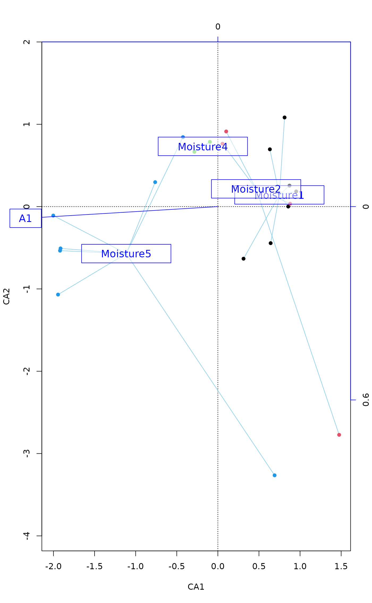
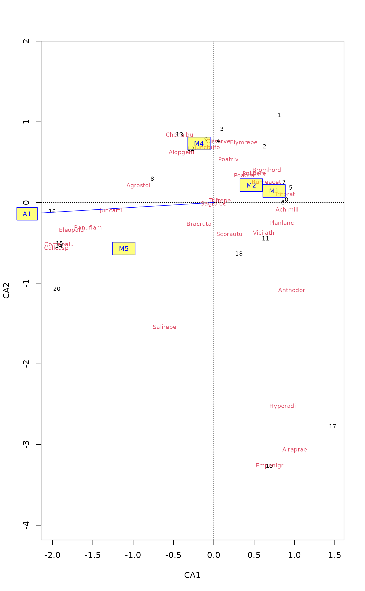
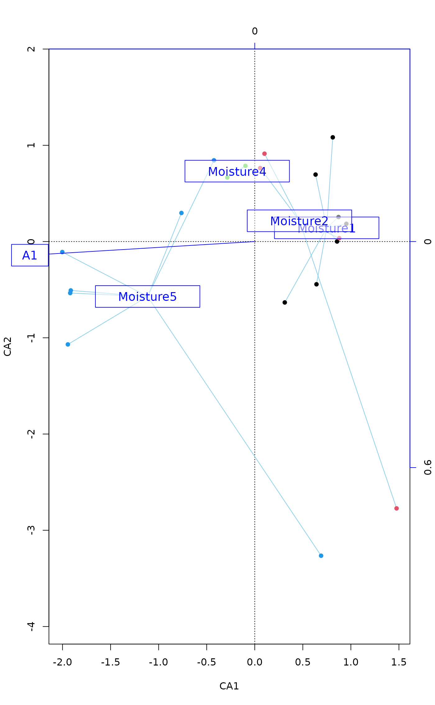
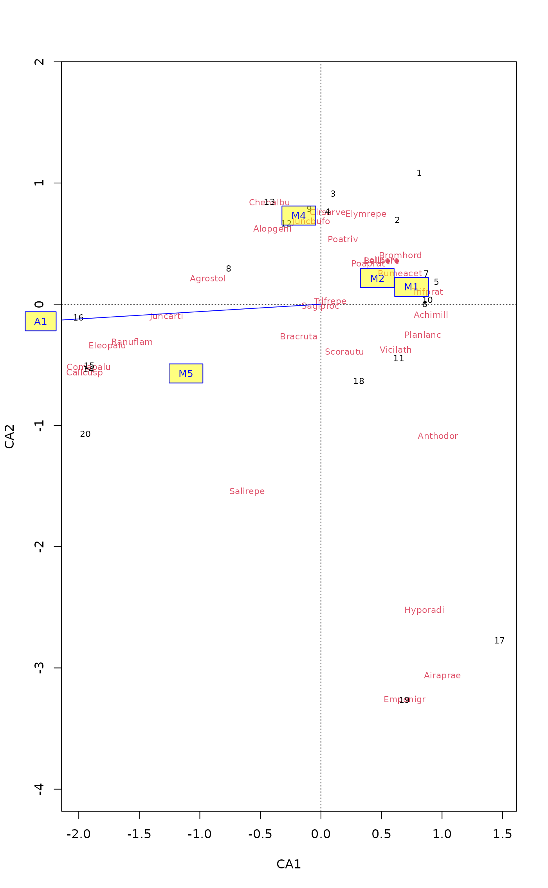

Fits an Environmental Vector or Factor onto an Ordination
envfit.RdThe function fits environmental vectors or factors onto an
ordination. The projections of points onto vectors have maximum
correlation with corresponding environmental variables, and the
factors show the averages of factor levels. For continuous varaibles
this is equal to fitting a linear trend surface (plane in 2D) for a
variable (see ordisurf); this trend surface can be
presented by showing its gradient (direction of steepest increase)
using an arrow. The environmental variables are the dependent
variables that are explained by the ordination scores, and each
dependent variable is analysed separately.
Usage
# Default S3 method
envfit(ord, env, permutations = 999, strata = NULL,
choices=c(1,2), display = "sites", w = weights(ord, display),
na.rm = FALSE, ...)
# S3 method for class 'formula'
envfit(formula, data, ...)
# S3 method for class 'envfit'
plot(x, choices = c(1,2), labels, arrow.mul, at = c(0,0),
axis = FALSE, p.max = NULL, col = "blue", bg, add = TRUE, ...)
# S3 method for class 'envfit'
scores(x, display, choices, arrow.mul=1, tidy = FALSE, ...)
vectorfit(X, P, permutations = 0, strata = NULL, w, ...)
factorfit(X, P, permutations = 0, strata = NULL, w, ...)Arguments
- ord
An ordination object or other structure from which the ordination
scorescan be extracted (including a data frame or matrix of scores).- env
Data frame, matrix or vector of environmental variables. The variables can be of mixed type (factors, continuous variables) in data frames.
- X
Matrix or data frame of ordination scores.
- P
Data frame, matrix or vector of environmental variable(s). These must be continuous for
vectorfitand factors or characters forfactorfit.- permutations
a list of control values for the permutations as returned by the function
how, or the number of permutations required, or a permutation matrix where each row gives the permuted indices. Setpermutations = 0to skip permutations.- formula, data
Model
formulaand data.- na.rm
Remove points with missing values in ordination scores or environmental variables. The operation is casewise: the whole row of data is removed if there is a missing value and
na.rm = TRUE.- x
A result object from
envfit. ForordiArrowMulandordiArrowTextXYthis must be a two-column matrix (or matrix-like object) containing the coordinates of arrow heads on the two plot axes, and other methods extract such a structure from theenvfitresults.- choices
Axes to plotted.
- tidy
Return scores that are compatible with ggplot2: all scores are in a single
data.frame, score type is identified by factor variablescores("vectors"or"factors"), the names by variablelabel. These scores are incompatible with conventionalplotfunctions, but they can be used in ggplot2.- labels
Change plotting labels. The argument should be a list with elements
vectorsandfactorswhich give the new plotting labels. If either of these elements is omitted, the default labels will be used. If there is only one type of elements (onlyvectorsor onlyfactors), the labels can be given as vector. The default labels can be displayed withlabelscommand.- arrow.mul
Multiplier for vector lengths. The arrows are automatically scaled similarly as in
plot.ccaif this is not given inplotandadd = TRUE. However, inscoresit can be used to adjust arrow lengths when theplotfunction is not used.- at
The origin of fitted arrows in the plot. If you plot arrows in other places then origin, you probably have to specify
arrrow.mul.- axis
Plot axis showing the scaling of fitted arrows.
- p.max
Maximum estimated \(P\) value for displayed variables. You must calculate \(P\) values with setting
permutationsto use this option.- col
Colour in plotting.
- bg
Background colour for labels. If
bgis set, the labels are displayed withordilabelinstead oftext. See Examples for using semitransparent background.- add
Results added to an existing ordination plot.
- strata
An integer vector or factor specifying the strata for permutation. If supplied, observations are permuted only within the specified strata.
- display
In fitting functions these are ordinary site scores or linear combination scores (
"lc") in constrained ordination (cca,rda,dbrda). Inscoresfunction they are either"vectors"or"factors"(with synonyms"bp"or"cn", resp.).- w
Weights used in fitting (concerns mainly
ccaanddecoranaresults which have nonconstant weights).- ...
Parameters passed to
scores.
Details
Function envfit finds vectors or factor averages of
environmental variables. Function plot.envfit adds these in an
ordination diagram. If X is a data.frame,
envfit
uses factorfit for factor variables and
vectorfit for other variables. If X is a matrix or a
vector, envfit uses only vectorfit. Alternatively, the
model can be defined a simplified model formula, where
the left hand side must be an ordination result object or a matrix of
ordination scores, and right hand
side lists the environmental variables. The formula interface can be
used for easier selection and/or transformation of environmental
variables. Only the main effects will be analysed even if interaction
terms were defined in the formula.
The ordination results are extracted with scores and
all extra arguments are passed to the scores. The fitted
models only apply to the results defined when extracting the scores
when using envfit. For instance, scaling in
constrained ordination (see scores.rda,
scores.cca) must be set in the same way in
envfit and in the plot or the ordination results (see
Examples).
The printed output of continuous variables (vectors) gives the
direction cosines which are the coordinates of the heads of unit
length vectors. In plot these are scaled by their
correlation (square root of the column r2) so that
“weak” predictors have shorter arrows than “strong”
predictors. You can see the scaled relative lengths using command
scores. The plotted (and scaled) arrows are further
adjusted to the current graph using a constant multiplier: this will
keep the relative r2-scaled lengths of the arrows but tries
to fill the current plot. You can see the multiplier using
ordiArrowMul(result_of_envfit), and set it with the
argument arrow.mul.
Functions vectorfit and factorfit can be called directly.
Function vectorfit finds directions in the ordination space
towards which the environmental vectors change most rapidly and to
which they have maximal correlations with the ordination
configuration. Function factorfit finds averages of ordination
scores for factor levels. Function factorfit treats ordered
and unordered factors similarly.
If permutations \(> 0\), the significance of fitted vectors
or factors is assessed using permutation of environmental variables.
The goodness of fit statistic is squared correlation coefficient
(\(r^2\)).
For factors this is defined as \(r^2 = 1 - ss_w/ss_t\), where
\(ss_w\) and \(ss_t\) are within-group and total sums of
squares. See permutations for additional details on
permutation tests in Vegan.
User can supply a vector of prior weights w. If the ordination
object has weights, these will be used. In practise this means that
the row totals are used as weights with cca or
decorana results. If you do not like this, but want to
give equal weights to all sites, you should set w = NULL. The
fitted vectors are similar to biplot arrows in constrained ordination
only when fitted to LC scores (display = "lc") and you set
scaling = "species" (see scores.cca). The
weighted fitting gives similar results to biplot arrows and class
centroids in cca.
The lengths of arrows for fitted vectors are automatically adjusted
for the physical size of the plot, and the arrow lengths cannot be
compared across plots. For similar scaling of arrows, you must
explicitly set the arrow.mul argument in the plot
command; see ordiArrowMul and
ordiArrowTextXY.
The results can be accessed with scores.envfit function which
returns either the fitted vectors scaled by correlation coefficient or
the centroids of the fitted environmental variables, or a named list
of both.
Value
Functions vectorfit and factorfit return lists of
classes vectorfit and factorfit which have a
print method. The result object have the following items:
- arrows
Arrow endpoints from
vectorfit. The arrows are scaled to unit length.- centroids
Class centroids from
factorfit.- r
Goodness of fit statistic: Squared correlation coefficient
- permutations
Number of permutations.
- control
A list of control values for the permutations as returned by the function
how.- pvals
Empirical P-values for each variable.
Function envfit returns a list of class envfit with
results of vectorfit and envfit as items.
Function plot.envfit scales the vectors by correlation.
Note
Fitted vectors have become the method of choice in displaying
environmental variables in ordination. Indeed, they are the optimal
way of presenting environmental variables in Constrained
Correspondence Analysis cca, since there they are the
linear constraints.
In unconstrained ordination the relation between external variables
and ordination configuration may be less linear, and therefore other
methods than arrows may be more useful. The simplest is to adjust the
plotting symbol sizes (cex, symbols) by
environmental variables.
Fancier methods involve smoothing and regression methods that
abound in R, and ordisurf provides a wrapper for some.
See also
A better alternative to vectors may be ordisurf.
Examples
data(varespec, varechem)
library(MASS)
ord <- metaMDS(varespec)
#> Square root transformation
#> Wisconsin double standardization
#> Run 0 stress 0.1843196
#> Run 1 stress 0.2276827
#> Run 2 stress 0.2204286
#> Run 3 stress 0.1967393
#> Run 4 stress 0.2066032
#> Run 5 stress 0.2234314
#> Run 6 stress 0.1869637
#> Run 7 stress 0.18584
#> Run 8 stress 0.18458
#> ... Procrustes: rmse 0.04935318 max resid 0.1575045
#> Run 9 stress 0.2178486
#> Run 10 stress 0.195049
#> Run 11 stress 0.2300388
#> Run 12 stress 0.1948413
#> Run 13 stress 0.1955836
#> Run 14 stress 0.2390981
#> Run 15 stress 0.2229031
#> Run 16 stress 0.1825658
#> ... New best solution
#> ... Procrustes: rmse 0.04162605 max resid 0.1518104
#> Run 17 stress 0.2390411
#> Run 18 stress 0.1825658
#> ... Procrustes: rmse 1.358437e-05 max resid 2.641802e-05
#> ... Similar to previous best
#> Run 19 stress 0.2092456
#> Run 20 stress 0.1982376
#> *** Best solution repeated 1 times
(fit <- envfit(ord, varechem, perm = 999))
#>
#> ***VECTORS
#>
#> NMDS1 NMDS2 r2 Pr(>r)
#> N -0.05732 -0.99836 0.2536 0.046 *
#> P 0.61973 0.78481 0.1938 0.093 .
#> K 0.76646 0.64229 0.1809 0.121
#> Ca 0.68520 0.72835 0.4119 0.008 **
#> Mg 0.63253 0.77454 0.4270 0.004 **
#> S 0.19140 0.98151 0.1752 0.123
#> Al -0.87159 0.49023 0.5269 0.001 ***
#> Fe -0.93602 0.35195 0.4451 0.002 **
#> Mn 0.79871 -0.60172 0.5231 0.002 **
#> Zn 0.61756 0.78652 0.1879 0.107
#> Mo -0.90306 0.42951 0.0609 0.539
#> Baresoil 0.92488 -0.38025 0.2508 0.041 *
#> Humdepth 0.93283 -0.36032 0.5201 0.002 **
#> pH -0.64798 0.76165 0.2308 0.070 .
#> ---
#> Signif. codes: 0 ‘***’ 0.001 ‘**’ 0.01 ‘*’ 0.05 ‘.’ 0.1 ‘ ’ 1
#> Permutation: free
#> Number of permutations: 999
#>
#>
scores(fit, "vectors")
#> NMDS1 NMDS2
#> N -0.02886657 -0.5027884
#> P 0.27284738 0.3455254
#> K 0.32602389 0.2732093
#> Ca 0.43973450 0.4674260
#> Mg 0.41334179 0.5061403
#> S 0.08011287 0.4108193
#> Al -0.63269483 0.3558584
#> Fe -0.62444176 0.2347947
#> Mn 0.57765881 -0.4351900
#> Zn 0.26771371 0.3409563
#> Mo -0.22293623 0.1060315
#> Baresoil 0.46316234 -0.1904201
#> Humdepth 0.67271099 -0.2598473
#> pH -0.31130599 0.3659163
plot(ord)
plot(fit)
plot(fit, p.max = 0.05, col = "red")
 ## Adding fitted arrows to CCA. We use "lc" scores, and hope
## that arrows are scaled similarly in cca and envfit plots
ord <- cca(varespec ~ Al + P + K, varechem)
plot(ord, type="p")
fit <- envfit(ord, varechem, perm = 999, display = "lc")
plot(fit, p.max = 0.05, col = "red")
## Adding fitted arrows to CCA. We use "lc" scores, and hope
## that arrows are scaled similarly in cca and envfit plots
ord <- cca(varespec ~ Al + P + K, varechem)
plot(ord, type="p")
fit <- envfit(ord, varechem, perm = 999, display = "lc")
plot(fit, p.max = 0.05, col = "red")
 ## 'scaling' must be set similarly in envfit and in ordination plot
plot(ord, type = "p", scaling = "sites")
fit <- envfit(ord, varechem, perm = 0, display = "lc", scaling = "sites")
plot(fit, col = "red")
## Class variables, formula interface, and displaying the
## inter-class variability with ordispider, and semitransparent
## white background for labels (semitransparent colours are not
## supported by all graphics devices)
data(dune)
data(dune.env)
ord <- cca(dune)
fit <- envfit(ord ~ Moisture + A1, dune.env, perm = 0)
plot(ord, type = "n")
with(dune.env, ordispider(ord, Moisture, col="skyblue"))
with(dune.env, points(ord, display = "sites", col = as.numeric(Moisture),
pch=16))
plot(fit, cex=1.2, axis=TRUE, bg = rgb(1, 1, 1, 0.5))

## Use shorter labels for factor centroids
labels(fit)
#> $vectors
#> [1] "A1"
#>
#> $factors
#> [1] "Moisture1" "Moisture2" "Moisture4" "Moisture5"
#>
plot(ord)
plot(fit, labels=list(factors = paste("M", c(1,2,4,5), sep = "")),
bg = rgb(1,1,0,0.5))

## 'scaling' must be set similarly in envfit and in ordination plot
plot(ord, type = "p", scaling = "sites")
fit <- envfit(ord, varechem, perm = 0, display = "lc", scaling = "sites")
plot(fit, col = "red")
## Class variables, formula interface, and displaying the
## inter-class variability with ordispider, and semitransparent
## white background for labels (semitransparent colours are not
## supported by all graphics devices)
data(dune)
data(dune.env)
ord <- cca(dune)
fit <- envfit(ord ~ Moisture + A1, dune.env, perm = 0)
plot(ord, type = "n")
with(dune.env, ordispider(ord, Moisture, col="skyblue"))
with(dune.env, points(ord, display = "sites", col = as.numeric(Moisture),
pch=16))
plot(fit, cex=1.2, axis=TRUE, bg = rgb(1, 1, 1, 0.5))

## Use shorter labels for factor centroids
labels(fit)
#> $vectors
#> [1] "A1"
#>
#> $factors
#> [1] "Moisture1" "Moisture2" "Moisture4" "Moisture5"
#>
plot(ord)
plot(fit, labels=list(factors = paste("M", c(1,2,4,5), sep = "")),
bg = rgb(1,1,0,0.5))
